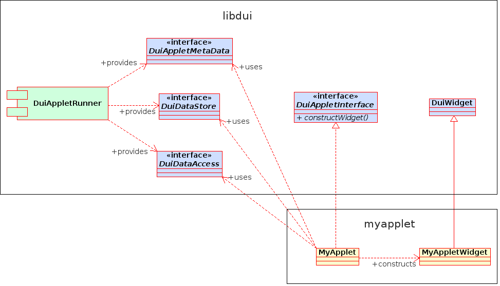
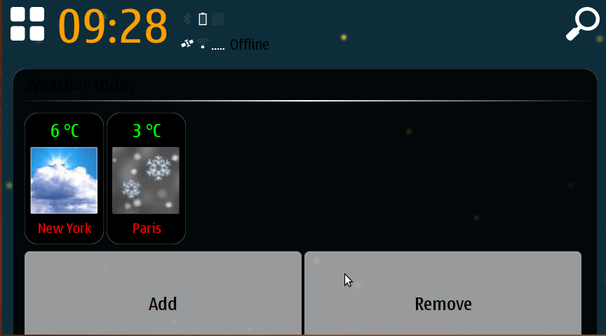
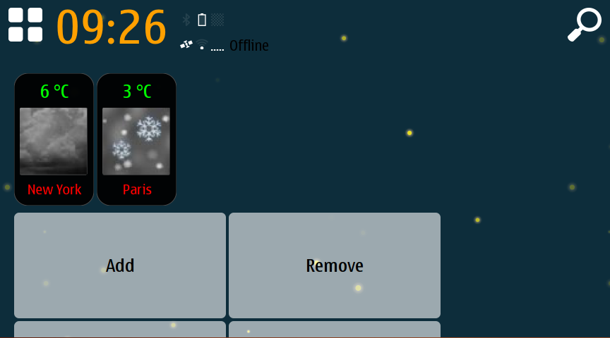

| Home · All Classes · Main Classes · Deprecated |
An applet is a small program which runs in an applet runner process that can be embedded to a mashup canvas (also called Experience canvas).
To develop applets, you need:
From the developer's point of view, an applet consists of a shared library, a metadata file, and possibly resources (such as images). All the contents are packaged into a Debian package so that the applets can be installed to a device.

Applet development classes
From the user interface point of view, an applet is a MWidget. Construct a MWidget class as you like, for instance, by using one of the existing derived classes in libmeegotouch or by creating your own widget. This is the UI part of your applet.
Regardless of the approach chosen for constructing your applet MWidget, you need to provide a connection point for the host process. For this, you need to implement an interface called MAppletInterface. You only need to implement one method in this interface:
MAppletInterface::constructWidget(const MAppletMetaData&, MDataStore&, MDataAccess&)
In this method you need to return a pointer to the MWidget of your applet.
Note: The ownership of the MWidget is transformed to the caller of this method, so you must not destroy the widget yourself.
You also need to use a couple of Qt macros. For example:
// myapplet.h #ifndef MYAPPLET_H #define MYAPPLET_H #include <MAppletInterface> #include <QObject> class MyApplet : public QObject, public MAppletInterface { Q_OBJECT Q_INTERFACES(MAppletInterface) public: virtual MWidget *constructWidget(const MAppletMetaData &metadata, MDataStore& instanceData, MDataAccess& settings); }; #endif // MYAPPLET_H
// myapplet.cpp #include <QtGui> #include <MWidget> #include "myapplet.h" Q_EXPORT_PLUGIN2(myapplet, MyApplet) MWidget* MyApplet::constructWidget(const MAppletMetaData &metadata, MDataStore& instanceData, MDataAccess& settings) { return new MWidget(); }
Applet metadata is defined in .desktop files according to freedesktop.org desktop entry specification. Applet metadata extends the .desktop entry specification by defining a new type X-MeeGoApplet. Thus, the required keys (Type, Name and Exec) have to be defined in the applet metadata.
Exec key in applet metadata defines the runner binary which is launched in a separate process to run the applet binary. This key needs to be defined but can be left empty. If Exec key is left empty, the applet runs inside the host process.
Applet metadata extends the desktop specification with the following new keys. These keys need to be defined under group X-MeeGoApplet.
| Key | Description | Value Type | Required |
|---|---|---|---|
| Applet | Defines the applet binary that is loaded using the runner defined by the Exec key. This binary needs to be located in /usr/lib/meegotouch/applets/ - directory. | string | YES |
| Identifier | Defines an identifier for the applet. The identifier is used, for example, to define the applet-specific style resource locations. | string (can contain characters [a-zA-Z0-9_-]) | NO |
The following example illustrates an applet metadata specification:
[Desktop Entry] Type=X-MeeGoApplet Name=ExampleApplet Icon=icon-l-music Exec=mappletrunner [X-MeeGoApplet] Applet=libexampleapplet.so
To install the applet:
1. Install the shared library to /usr/lib/meegotouch/applets/.
2. Install the metadata .desktop file to /usr/share/meegotouch/applets/.
Each Debian package can only contain one applet. If applets need to be bundled, create a meta package that depends on individual applet packages.
The applet package must contain the following metadata:
Maemo-Desktop-File: /usr/share/meegotouch/applets/your-applet-desktop-file.desktop
To add the metadata to an applet package, modify the section for the applet binary package in your debian/control file to include the following:
XB-Maemo-Desktop-File: /usr/share/meegotouch/applets/your-applet-desktop-file.desktop
The applet system provides the applet instances with an object that can be used to store applet instance specific data in a permanent storage. When the applet instance is removed, the instance-specific data is not needed anymore. Instance-specific data includes the data that the applet needs to restore an instance. The instance data object implements the MDataStore interface.
Applets do not create their own objects of the instance data classes. Instead, the applets are provided with the required instance data object through the MAppletInterface::constructWidget(const MAppletMetaData&, MDataStore&, MDataAccess&) call as the second argument.
Whenever the state of an applet instance changes in a way that affects the restoration of the applet instance, the applet should update the data.
There can be applet settings that users can access through the settings dialog. There are two kinds of settings: global and instance settings. Global settings affect all running instances of a given applet. Instance settings, on the other hand, only affect the applet instance that they are associated with.
The settings can be accessed by the applet code through the interface offered by the MAppletInterface::constructWidget(const MAppletMetaData&, MDataStore&, MDataAccess&) call as the third argument.
The instance and global settings are both accessed through this same interface. The user of the settings object cannot distinguish between instance and global settings - they are intermixed.
Important: Do not specify settings in both global and instance settings with the same name. If a setting is defined with the same name in both the global and instance settings, the global setting is shadowed by the instance setting.
The settings of an applet are defined with a settings language. The global and instance settings are defined in separate files. An applet can contain one or both settings files, or no settings file at all. The settings depend entirely on the use case of the applet.
The titles of the various settings can be localised by providing a translation ID as the value for the title attribute in the settings XML file. If a title does not need to be localised, it can be written as such in the attribute. The translation catalogs must only contain IDs with a specific prefix so they do not conflict with common words.
The settings file names are partly taken from the applet metadata file basename. For example, if the applet's metadata file is myapplet.desktop, its basename is myapplet. The corresponding settings file names would be myapplet-instance.xml for instance settings and myapplet-global.xml for global settings.
Both files are installed in the /usr/share/meegotouch/applets/settings directory.
Applets may be reparented to an MContainer by MMashupCanvas. MContainer can include optional applet information on its title bar, such as the icon, title and additional informative text. To place an applet in a container, set the container-mode property in the style sheet of the mashup canvas. The following example illustrates the base style sheet of the mashup canvas:
MMashupCanvasStyle {
container-mode:true;
}
As shown above, default settings for container-mode property are true. When the container-mode property is true(default), an applet is embedded, see

Container mode on(default)
The following figure illustrates an applet when container-mode property is false:

Container mode off
Use the following properties and signals in your applet widget class to provide applet information:
Q_PROPERTY(QString appletIcon READ icon WRITE setIcon) Q_PROPERTY(QString appletTitle READ title WRITE setTitle) Q_PROPERTY(QString appletText READ text WRITE setText) signals: // change icon in MContainer void appletIconChanged(QString newIcon); // change title in MContainer void appletTitleChanged(QString newTitle); // change additional text in MContainer void appletTextChanged(QString newText);
The property and signal names must be as stated above. The property access function names can differ.
Every applet has an applet identifier that is used in several places in the applet system. The applet identifier is a string that uniquely identifies the applet. Note: The applet identifier is not specific to an applet instance.
The applet identifier is determined like this:
Identifier) is specified in the applet metadata (and it is valid), the identifier is used.libexampleapplet.so, the identifier is exampleapplet.Applets can define their own styles just like any other applications in the MeeGo Touch world. You can use style sheets and images for in the usual way. In applet styling, the location of the style resources is important.
The applet identifier is used in the construction of the resource location. The applet identifier is used as the application name in the directory name. For more information on the directory locations, see Theme directory structure.
For the most part, all internationalisation guidelines apply to applets as well. However, the applet identifier is used as the translation catalog name.
The meegotouch-dev-tools package includes a tool called mapplettester which can be used to test applets. The tool loads an applet to a window where you can interact with it and visually check the results. You can also use this tool for debugging the applet.
To load an applet with mapplettester, use the following command:
mapplettester <metadatafile>
where <metadatafile> is the metadata file name of the applet.
Note: The applet must be installed to the system before mapplettester can use it.
The mapplettester also supports applet settings. The settings can be accessed by opening the context menu for the applet (for instance, by right-clicking the applet).
You do not necessarily need to write your own applet from the very beginning. You can use one of the general-purpose enabling applets such as the WWF (Web Widget Framework) or Python applet.
The following section is only meant for application developers who want to preconfigure which applets appear on the mashup canvas by default. Applet developers do not need this information.
Each mashup canvas stores information about the applets instantiated on that particular canvas in the ~user/.config/appname/canvasname.data file. If this file does not exist when the mashup canvas is instantiated, the global defaults are copied from /etc/xdg/appname/canvasname.data if that file exists. This file should be supplied by the application developer if there is a need to define which applets should be instantiated on a particular canvas by default.
The following example illustrates the data file:
[1] desktopFile=/usr/share/meegotouch/applets/myapplet.desktop private\layoutIndex=0 [2] desktopFile=/usr/share/meegotouch/applets/someotherapplet.desktop private\layoutIndex=1
The value in brackets is a canvas specific applet identifier, which is an unsigned integer starting from 1. The value of the desktopFile key defines the .desktop file which contains the information for this particular applet. The private\layoutIndex key contains the applet's location in the layout (which is currently just an index - this will change in the future).
If the application package contains this file, it is not possible to define different configurations for different purposes. Instead, there should be a settings template package for the application which can be instantiated for different configurations. For an example, see the mhomescreen-settings-template package. It contains example ConfML, XSLT and GCFML files for the MeeGo Touch Home Screen package in the conf directory, the necessary debian packaging files in the debian directory and tests in the tests directory. An instantiated version of the template, mhomescreen-settings-default, which also contains the sources, can be fetched with apt-get source mhomescreen-settings-default.
| Copyright © 2010 Nokia Corporation | MeeGo Touch |